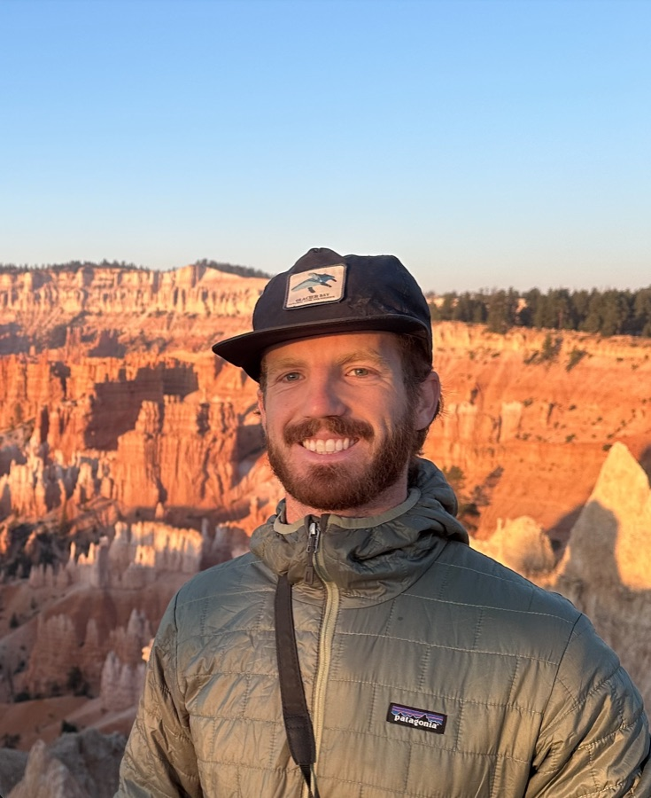

Jackson
Coldiron
I study how water, agriculture, and land systems are changing, using satellite remote sensing, geospatial modeling, and policy analysis, and I build tools that put that evidence in the hands of the people who manage them.
Research CV Get in touch
Data science for water, food, and the landscapes in between
My work sits at the intersection of water resources, climate-smart agriculture, and conservation planning. I map irrigation from space, model where multifunctional landscapes like agroforestry and agrivoltaics can work, and translate groundwater science into policy.
I hold a Master of Environmental Science & Management from UC Santa Barbara's Bren School (Water Resource Management, 4.00 GPA). I'm currently a Groundwater Policy Intern at the Environmental Defense Fund, where I lead a landscape analysis for California DWR's Groundwater Accounting project. Before that I was an Arnhold Graduate Fellow with Conservation International and the Larsen Lab, and a research assistant in UCSB's Water, Vegetation & Society Lab, where I mapped smallholder irrigation across Zambia.
Before Bren I worked on sustainability partnerships in New York, farmed in Colombia, worked with California native plants at a nursery in Oakland, and tracked kiwi chicks by radio telemetry in New Zealand. I bring that field-level curiosity to every dataset.
- Currently
- Groundwater Policy Intern, Environmental Defense Fund
- Education
- MESM, UC Santa Barbara (2026)
BBA, University of Wisconsin–Madison (2021) - Based in
- Santa Barbara, California
- Toolkit
- R · Python · Google Earth Engine · ArcGIS Pro · HPC/SLURM · Shiny · Quarto
- Languages
- English · Spanish (professional)
What I work on
Groundwater & water policy
SGMA implementation, groundwater accounting, watershed planning, and nature-based coastal adaptation.
Irrigation & remote sensing
Mapping smallholder irrigation from Sentinel-2 and testing whether irrigation buffers crops against drought.
Multifunctional landscapes
Where agroforestry and agrivoltaics can deliver food, energy, and climate benefits across Sub-Saharan Africa.
Conservation & climate risk
Climate risk to Indigenous territories in Amazonia, chaparral habitat, and field ecology.
Research at scale
Recent projects
Accounting for Groundwater
A cross-basin look at how California groundwater agencies measure and manage stream depletion, land repurposing, and community outcomes under SGMA.
Multifunctional Landscapes in Sub-Saharan Africa
Continental-scale suitability for agroforestry and agrivoltaics under current and future climate, with crop-yield and energy co-benefits.
Mapping Smallholder Irrigation in Zambia
A benchmark ML dataset, a 50M-image Sentinel-2 pipeline, and a Shiny explorer built with and for Zambian stakeholders.
Recent updates
- Jun 2026Graduated from the Bren School with a Master of Environmental Science & Management (4.00 GPA).
- Jun 2026Joined the Environmental Defense Fund as a Groundwater Policy Intern on a DWR-funded groundwater accounting project.
- 2026Led a submission-ready manuscript on agroforestry & agrivoltaic suitability across Sub-Saharan Africa (target: Environmental Research Letters).
- Oct 2025Named an Arnhold Graduate Fellow with Conservation International and the Larsen Lab at UCSB.
- Summer 2025In Lusaka, Zambia, presented irrigation mapping results in three seminars and ten stakeholder meetings with researchers, NGOs, and government.